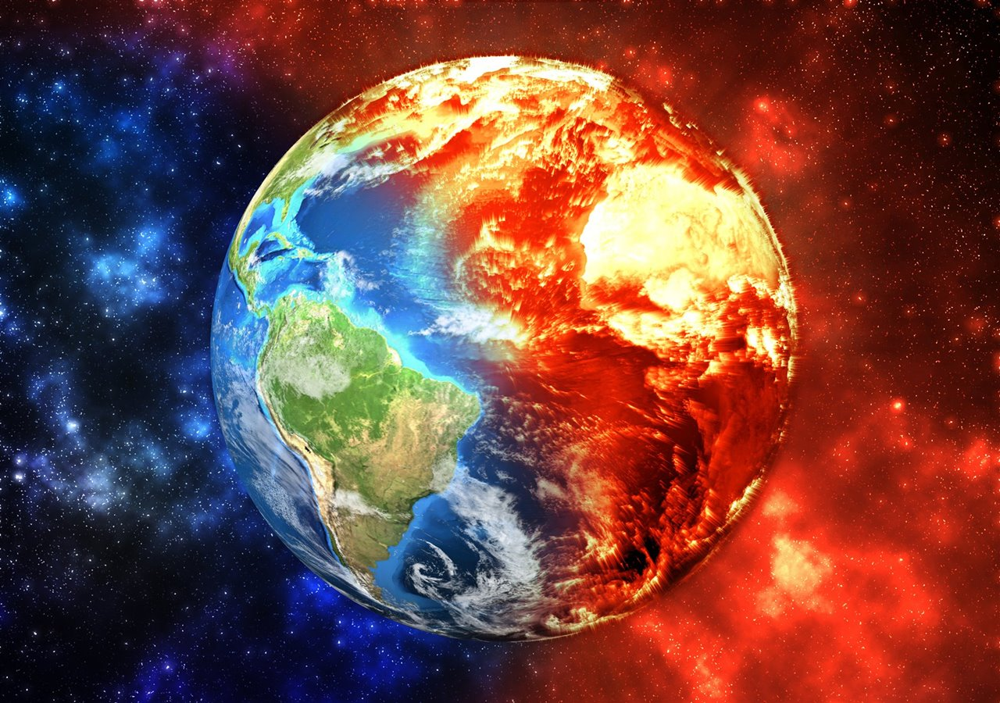
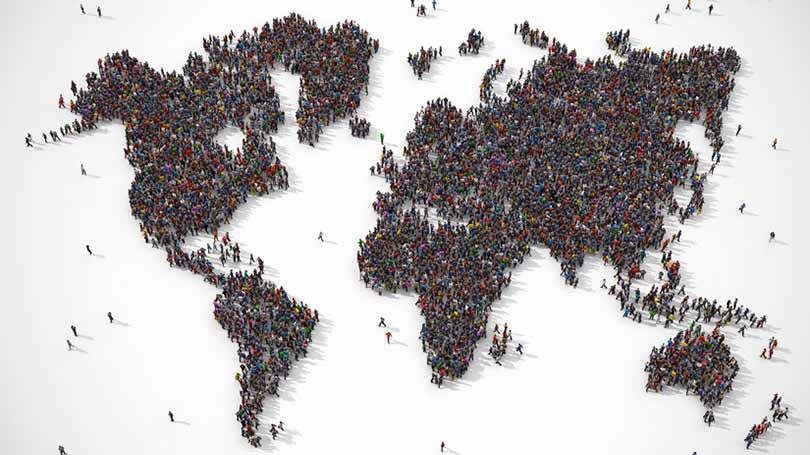
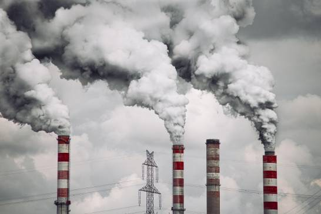
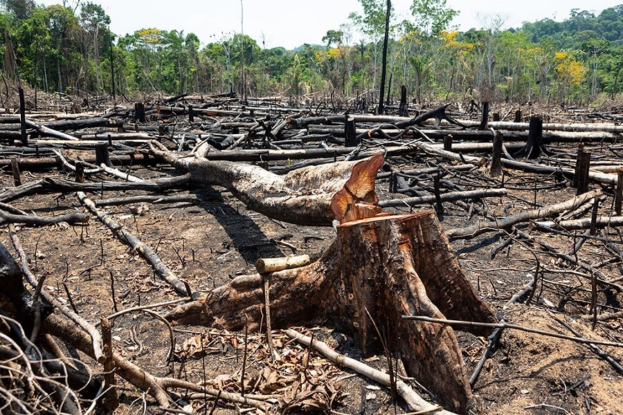

Un resumen sobre los desafíos globales que enfrentamos hoy en día.
Los principales retos sociales y ambientales incluyen el cambio climático,la superpoblacion, el consumo de agua, la contaminacion, deforestacion y otros problemas. Estos problemas afectan a millones de personas en todo el mundo y requieren acciones globales coordinadas para ser enfrentados de manera efectiva.
El aumento de las temperaturas globales y los fenómenos climáticos extremos amenazan el equilibrio del planeta.
Esto tendra un gran impacto en el tamaño, estructura y distribucion de los recursos, supondra un reto para lograr la sostenibilidad del planeta.
El acceso al agua potable sigue siendo un desafío en muchas regiones del mundo, con el aumento de la poblacion y el sector agricula, la demanda cada vez es mayor.
La contaminación es un problema global que afecta la salud de la población, la economía y el medio ambiente, y requiere acciones conjuntas para mitigar sus efectos.
La deforestación es la reducción o eliminación completa de la superficie forestal, principalmente causada por actividades humanas como la agricultura y la tala ilegal.
Necesdades de uar energias renovables, erradicar la sobrepesca(aumentar las reservas marinas-oceanos), gestion de residuos, perdida de la biodiversidad.
|  |  | |
|  |  |